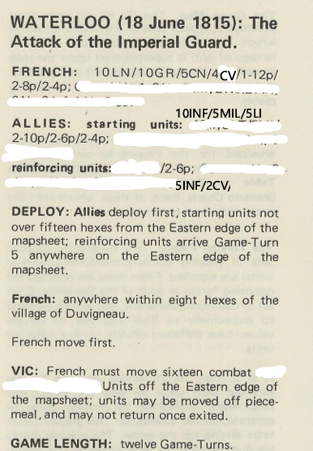

Special Rules:
- Stacking=4; except for OO troops which are stacking=1.
- No command control, all units have full MF at all times.
- No defensive fire, but still must stop on moving adjacent to fire unit.
- Inf. (not 'OO') and Art. either move or fire in a turn, may not do both. 'OO' and horse may fire and move.
- 'OO' troops (the 'LI', 'OO'=open order) have double Fire Protection Strength.
They may not stack with other units.
- 'GN' ('guns', artillery) units have a starred range
- can fire at double range for 1/2 attack factor,
can fire at triple range for 1/4 attack factor (round fractions downwards).
- Guns only fire if 'unlimbered', but have no MF. Limbering/unlimbering costs 3 MF.
- 'PINNING': moving away from adjacent non-destroyed enemy units are disrupted at the end of their move;
cavalry may spend 3MF to avoid being disrupted.